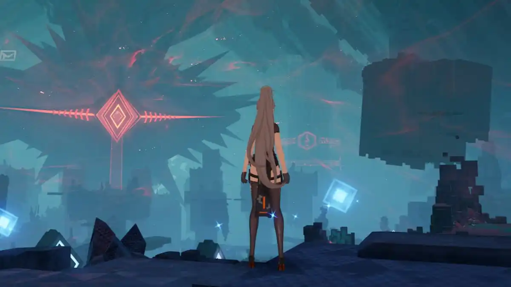

Void Abyss
In Void Abyss, The Wanderer must collect 3 keys in order challenge a powerful boss. Collectible buffs can be found and strategically transferred to party members to ensure a more successful boss fight.